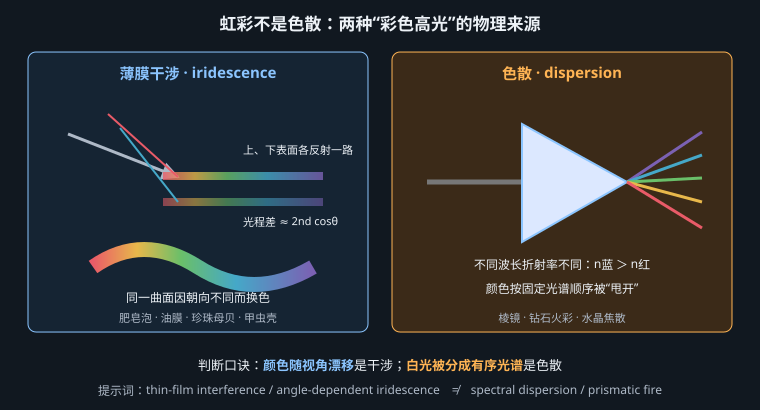
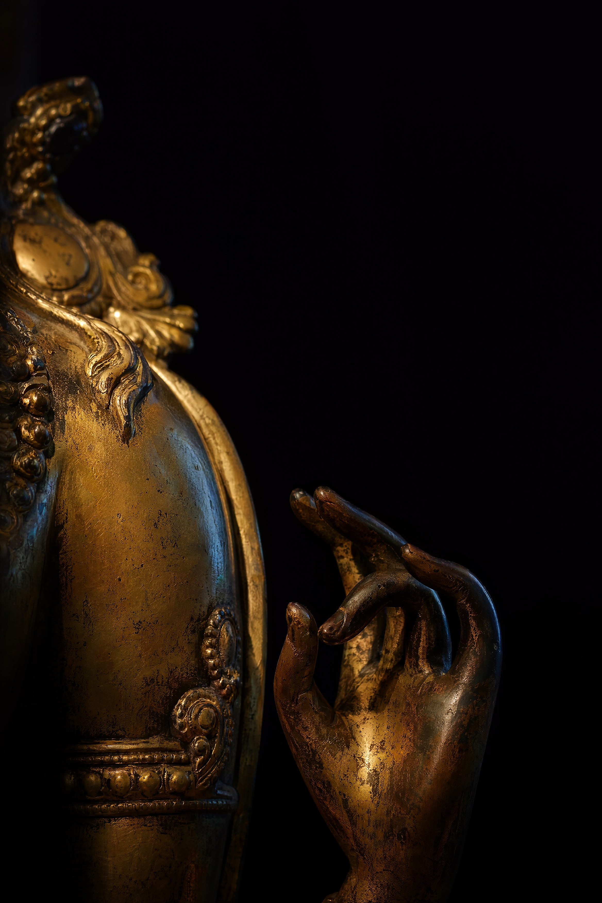
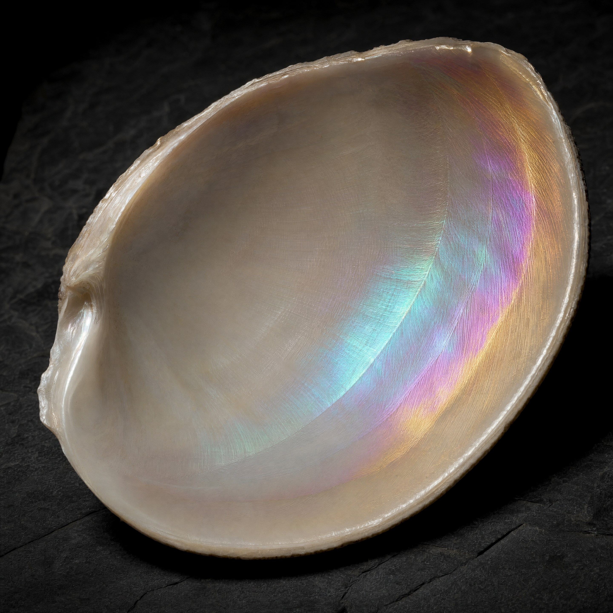
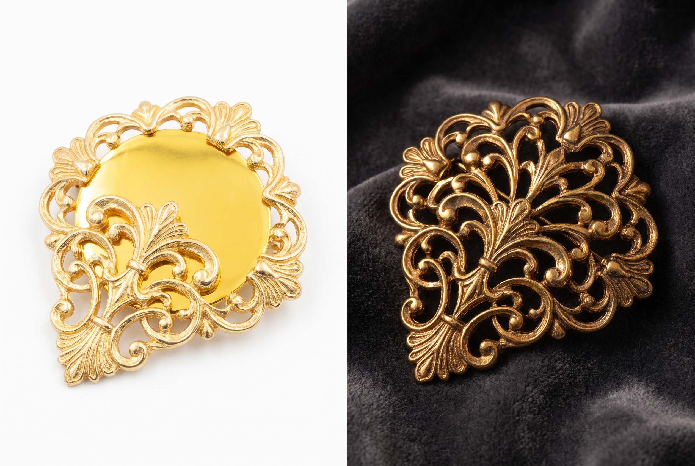

"高级感"背后是三种可以讲清楚的光学现象——以及一条关于节制的判断标准
珠宝广告、美妆包装、高端球鞋、赛博朋克概念图——这些画面里让人觉得"贵"的东西，剥掉修辞之后，反复出现的其实只有三种物理机制。它们分别是颜色随视角变化、颜色被空间分离、高光被方向拉伸。理解这三条，你就不用去背 luxury、premium、high-end 这类零信息量的词了。
| 现象 | 物理机制 | 典型载体 | 画面特征 |
|---|---|---|---|
| 各向异性高光 | 平行微沟槽使高光沿一个方向摊开 | 拉丝金属、丝绸、头发、唱片纹 | 圆高光被拉成条带，随形体流动 |
| 薄膜干涉 iridescence | 薄膜上下表面反射光的光程差造成特定波长相长/相消 | 肥皂泡、油膜、珍珠母贝、甲虫壳、CD 盘面 | 颜色随视角连续变化，青紫粉相互流转 |
| 色散 dispersion | 折射率随波长不同（n蓝 > n红） | 棱镜、钻石、切割水晶、镜头边缘 | 白光被拆成排列有序的光谱，红在一端紫在另一端 |
这是最容易混淆、也最影响提示词准确度的一处：
薄膜干涉的彩色是"贴在表面上、随你移动而变"的——同一个点，你换个角度看就变了颜色，颜色没有固定顺序，呈流动的斑块。
色散的彩色是"被甩出去、有固定顺序"的——它离开物体本身，落在别处，且永远按红橙黄绿蓝紫排列。
写提示词时选错，模型给的东西会完全不是你要的：想要油膜光泽却写了 prismatic rainbow，会得到一道生硬的彩虹条纹糊在物体上。
机制已在第 6 章第五节讲过，这里只补两条实践要点：
running horizontally along the grain / circular brushing radiating from the centre / following the curve of the fabric。one continuous flowing highlight band that bends with the form，比写 shiny 精确得多。当薄膜厚度与可见光波长同量级（几百纳米）时，从薄膜上表面反射的光与从下表面反射的光之间存在光程差。某些波长相位相长（那个颜色被加强），另一些相消（那个颜色消失）。视角改变 → 光在膜内走的路径长度改变 → 增强的波长改变 → 颜色变了。这就是肥皂泡上颜色随你走动而流转的全部原因。
同理，膜厚不均也会造成颜色不同——所以肥皂泡上是一片流动的色带，因为膜在重力下逐渐变薄。珍珠母贝与甲虫壳则是多层结构反复干涉（结构色），比单层膜更饱和、更稳定。
thin-film interference across the surface, iridescent colours shifting from cyan to magenta as the form turns, soap-bubble-like colour bands following the curvature
关键词是 shifting 与 as the form turns：它们把"随视角变化"这个定义特征写成了模型能画出的空间关系——在同一张静止的图上，视角变化表现为曲面上不同朝向的区域呈现不同颜色。这是把动态现象翻译成静态画面的标准手法。
棱镜把白光展开成光谱，是因为蓝光折射率比红光高、弯得更多，两者在出射后逐渐分离。钻石的"火彩"（fire）是同一回事，只是被切割面的全内反射放大了很多次——所以火彩表现为一小片一小片、分散在各个刻面上的纯色闪光，而不是一道完整彩虹。这个区别对提示词很重要。
brilliant-cut diamond, spectral fire scattered as small isolated flashes of pure red and blue across individual facets, sharp caustic light thrown onto the surface below

"金色"是本书最容易被写坏的材质，第 6 章已经讲了参数层面的原因（金属度、高光带色、必须有反射环境）。这里补的是工艺层面的差异——同样是金，工艺不同，表面结构不同，成像差别很大。
| 工艺 | 做法 | 表面结构 | 提示词 |
|---|---|---|---|
| 金箔 gold leaf | 把金锤成极薄的片贴上去 | 有拼贴接缝、褶皱、气泡、破口，底材从破口露出；不平整 | hand-applied gold leaf with visible overlapping seams, tiny wrinkles and torn gaps revealing the red bole underneath |
| 鎏金 fire-gilding | 金汞齐涂布后加热，汞挥发留下金层 | 金层薄而贴合，随底胎起伏；边角易磨露底铜，呈金与青铜混合 | fire-gilded bronze, thin gold layer following every contour of the cast relief, worn through to dark bronze on the raised edges |
| 电镀金 gold-plated | 电解沉积 | 厚度均匀、极其光滑；太完美，缺乏手作痕迹 | machine-polished gold plating, flawlessly even mirror surface, no tool marks |
差别在金的面积占比与反射环境的色温，不在金本身。
廉价感来自：大面积纯金 + 均匀高亮 + 高饱和黄色 + 白背景（回到第 6 章：白背景毁金属）。
高级感来自：小面积金 + 大面积深色，金只出现在结构线与边缘；反射环境有明确的明暗与色温差（一侧暖光、一侧冷环境光），使金面上出现暖到冷的反射渐变而不是一片黄。
提示词落地：gold accents confined to the raised edges, the rest in deep shadow, warm key reflection on one side and cool ambient reflection on the other。
holographic foil 在物理上是表面压印了周期性微光栅，靠衍射把不同波长分向不同角度——效果类似色散但由光栅产生，视觉上是高饱和、有方向性、随角度剧烈变化的彩虹色。它与薄膜干涉的区别在于色带更规则、更"电子"、边界更硬。
holographic foil surface, diffraction-grating rainbow shifting sharply with the viewing angle, saturated cyan-magenta-lime bands aligned in one direction, reflecting a dark environment with a few bright light sources
最后一行同样重要：全息材质在明亮均匀的环境里会灰掉——它需要暗环境 + 少数强点光源才能把彩色衍射打出来。这是全息效果最常见的失败原因。
这是技术美术读者最熟悉、非技术读者最常搞错的一组区别：
| 自发光 emissive | 被照亮 lit | |
|---|---|---|
| 亮度关系 | 可以亮过画面中的任何反射面，直接过曝到纯白 | 永远暗于光源，受衰减约束 |
| 阴影 | 自身没有阴影，且会照亮周围物体 | 有明确的受光面与背光面 |
| 与环境 | 在附近表面上投出自己的颜色 | 颜色由光源决定 |
| 提示词 | emissive, self-illuminated, casting its own coloured light onto the surrounding surfaces | lit by a warm lamp from the left |
判断一张发光图假不假，只看一件事：它有没有照亮别的东西。AI 极其常见的失败是给出一个"亮蓝色的符文"，但旁边的石头、握着它的手、脚下的地面全都没有一点蓝色反光——那看起来就是一张贴纸。修法非常直接：
glowing runes casting cyan light onto the surrounding rock and the holder's face, coloured bounce light in the shadows, the light source itself blown out to white
辉光（bloom）在物理上是镜头内部散射造成的亮部溢出，不是物体本身发出的雾。所以它只出现在极亮的区域周围，且亮度越高溢得越远。把全图糊上一层雾是错误的 bloom。提示词写 tight bloom halo around the brightest points only, clean elsewhere。
下面这些效果，在光学工程师眼里全是需要被消除的缺陷。但摄影史把它们变成了语言——因为观众通过这些缺陷识别出"这是被一台真实相机拍下的"，真实感反而上升。这条逻辑值得记住：完美的成像看起来像 CG，有缺陷的成像看起来像现实。
| 效果 | 物理成因 | 提示词 | 用途 |
|---|---|---|---|
| 体积光 god rays | 空气中的尘埃/水汽对光的米氏散射，使光路可见 | volumetric light shafts through dust in the air | 建立空间纵深与神圣感 |
| 焦外光斑 bokeh | 失焦点光源在感光面上成为光圈形状的圆盘 | large circular bokeh from out-of-focus point lights, 85mm f/1.4 | 压缩背景信息、制造氛围 |
| 色差 chromatic aberration | 镜头对不同波长聚焦位置不同（就是色散） | subtle chromatic fringing at the high-contrast edges of the frame | 写实的"相机味"；过量则廉价 |
| 光晕 / 眩光 flare | 强光在镜片组间多次反射 | anamorphic lens flare streaking horizontally from the light source | 科幻、电影感 |
| 棱镜折射 | 在镜头前放置棱镜/玻璃制造重影与色带 | prism refraction streaks across one corner of the frame | 时尚、MV 感 |
| 暗角 vignette | 镜筒遮挡边缘光线 | gentle natural vignette | 把视线收拢到中心 |
lens flare 是全局标签，模型会把它随意撒；anamorphic flare streaking horizontally from the streetlamp in the upper left 指定了光源、方向、位置，模型能画出因果关系正确的画面。
同理：bokeh → bokeh from the string lights behind her；chromatic aberration → chromatic fringing only at the frame edges。所有光学效果都必须有一个明确的成因物体，否则它就是贴图。
原因很实际：这些效果本身很吸引眼球，而且模型很乐意给。你写一个 iridescent，模型可能把整张图刷成彩虹；你写 lens flare，可能得到六道光斑横穿画面。结果是画面失去主次——所有东西都在闪，等于没有东西在闪。
给三条可执行的判断标准：
iridescence appearing only where the surface catches the light at a grazing angle，把范围限制交给物理条件而不是靠运气。the strongest fire concentrated at the crown facet, the rest of the stone quiet and dark 这类显式对比。还有一条给中文读者的具体提醒：dreamy、magical、ethereal、psychedelic 这类词与第 1 章批判的质量词是同一性质——它们不描述画面事实，只把图推向训练集里"氛围图"的重心，结果是整体降对比 + 撒一堆彩色光斑。本章所有提示词里都没有它们。
close-up of a fire-gilded bronze deity statue, shoulder and hand only, a single warm 2800K light from the upper left, cool 6500K ambient bounce from a window on the right, everything else in deep shadow, thin gold layer following every contour of the cast relief, worn through to dark bronze on the raised edges of the fingers and shoulder, dark tarnish settled into the recesses of the ornament, warm-to-cool reflection gradient across the polished gold surfaces, gold occupying less than a quarter of the frame, the rest near-black, 100mm macro, f/5.6, museum documentation lighting
模型：FLUX.2 · 画幅 4:5 · 无负面词。
这条提示词把三章的方法叠在了一起：第 6 章的"金属需要反差极大的反射环境"（暖冷双光源）、第 8 章的磨损叙事（凸起磨露底铜、凹处积垢）、本章的面积节制（less than a quarter of the frame）。这才是"金碧辉煌"的正确写法——靠对比，不靠面积。

a nacre shell interior resting on dark slate, one small hard light source from the upper right, dark surroundings, soft pearlescent white base with thin-film interference appearing only where the surface curves into the light at a grazing angle, iridescent colours shifting from pale cyan through magenta to gold as the shell's curvature turns away from the viewer, fine concentric growth ridges visible across the surface, the rest of the shell reading as quiet warm white, 90mm macro, f/8, top-down three-quarter angle
模型：MJ v8.1 · 画幅 1:1。
第 3–4 行是节制标准 1 的直接实现：用物理条件（掠射角）限定虹彩出现的位置，而不是让它铺满。第 5 行 as the curvature turns away 把"随视角变化"翻译成了静态画面里的空间渐变。倒数第二行显式声明大部分区域是安静的暖白，这是防止模型过度上色的保险丝。

a person standing under a shop awning on a wet street at night, a single sodium-vapour streetlamp at 2000K just outside the frame upper left, cyan neon sign behind them casting coloured light onto the wet pavement, volumetric light shafts through the drizzle around the streetlamp, anamorphic flare streaking horizontally from the lamp, large circular bokeh from out-of-focus traffic lights far down the street, tight bloom halo around the neon tubes only, clean elsewhere, subtle chromatic fringing at the frame edges, mirror-like reflections of the neon in the wet asphalt, 35mm, f/1.4, eye level, cinematic night exterior
模型：Nano Banana Pro · 画幅 21:9。
这条集中了本节六个效果，之所以不会乱，是因为每一个都被绑定到一个具体成因：体积光绑定 drizzle + 路灯，眩光绑定路灯，焦外光斑绑定远处车灯，bloom 绑定霓虹管且加了 only … clean elsewhere，湿地反射绑定雨。
另注意 just outside the frame：强光源放在画外是电影摄影的常用手法，它让眩光与体积光有来源，同时不占构图。

第 6 章给了参数与措辞的对应关系，是字典。
第 7 章练的是高粗糙度、纤维结构与透射，核心一招：柔软靠逆光，不靠柔光。
第 8 章练的是金属度分布与三级细节层级，核心一招：写清"哪里亮、哪里脏"，并补上微观颗粒。
第 9 章练的是方向性与波长效应，核心一招：每个光学效果都必须有成因物体，且必须节制。
四章共用同一个立场：把感受还原成物理事件，再把物理事件写成句子。接下来的 PART 04 转入文化层——那里的规则完全相反，靠的是指称而非描述。